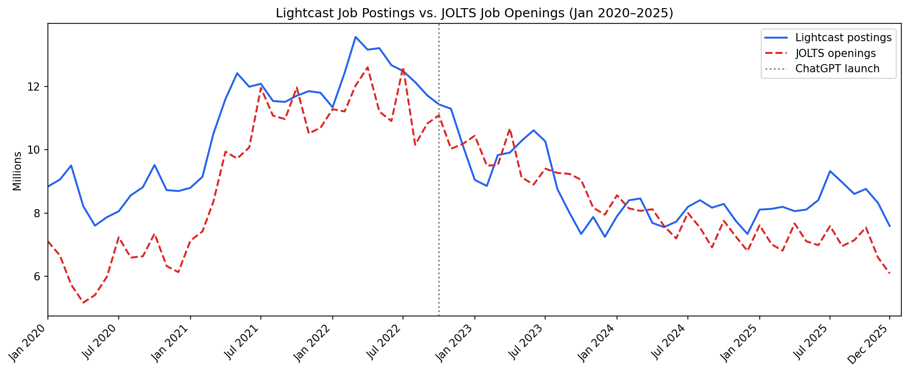
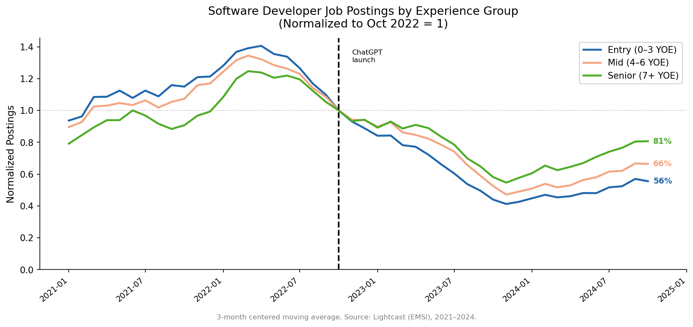
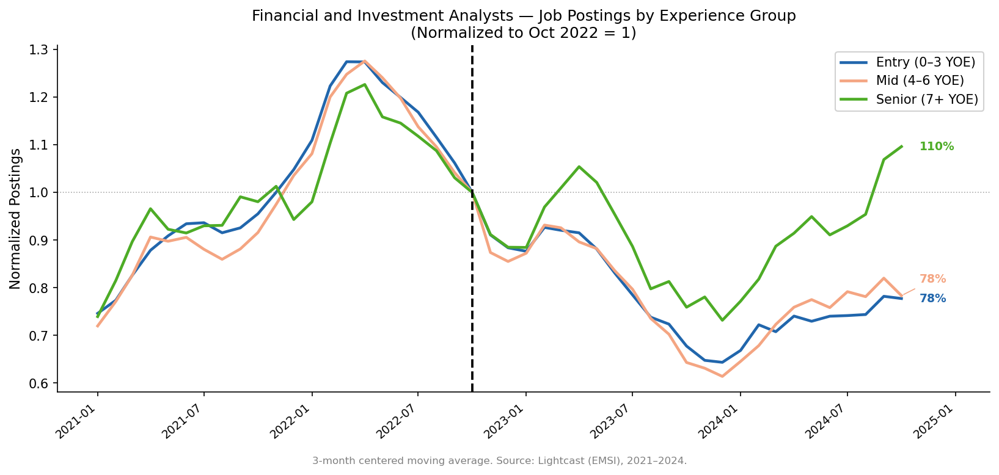
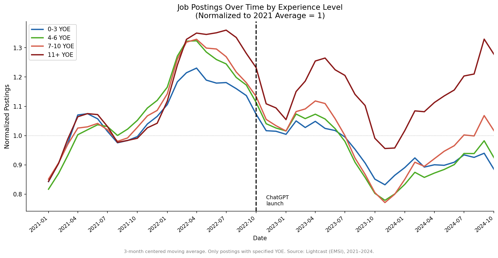
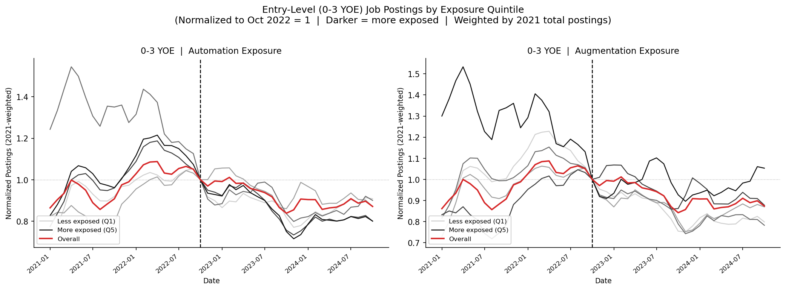
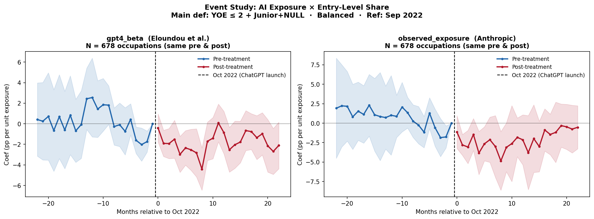

Did ChatGPT Reshape Entry-Level Job Postings?
Evidence from AI Exposure and Job Postings Data
This paper examines whether the public release of ChatGPT in October 2022 reduced entry-level hiring in occupations highly exposed to generative AI. Using monthly job postings data from Lightcast (2020–2024) across 733 occupations, I document four findings. First, in software development , a high-AI-exposure occupation , entry-level postings fell to 56% of their October 2022 level by end of study, 2.4× harder than senior postings (81%). Second, across all occupations, overall entry-level postings have not recovered to pre-2022 levels while high-experience postings continued to grow. Third, a continuous-treatment difference-in-differences model finds that high-AI occupations saw a ≈ −2.4 percentage point decline in entry-level share post-ChatGPT, significant at the 5% level after controlling for each occupation’s sensitivity to interest rate changes. Fourth, the decline is concentrated in automating occupations; augmenting occupations show a different pattern. Together, the results suggest AI exposure may be compressing the entry tier of labor demand in ways that fall hardest on workers who rely on entry-level roles to build careers.
1 Introduction
In November 2022, OpenAI launched ChatGPT , and within weeks it became the fastest-growing consumer application in history. The launch marked a discrete and widely recognized break in the accessibility of generative AI to both employers and workers. Employers across industries began experimenting with AI tools for drafting, coding, data processing, and customer interaction , tasks that had, until recently, been the domain of entry-level workers building foundational skills.
This paper asks a narrow but consequential question: Did the ChatGPT launch reduce the share of job postings that are entry-level in occupations more exposed to AI? The motivation is straightforward. If generative AI can perform the tasks assigned to junior hires , drafting correspondence, writing code, summarizing documents, answering routine inquiries , then firms may respond at the margin not by laying off incumbents but by simply posting fewer entry-level roles. The hiring funnel narrows. Workers who were never hired are invisible in employment statistics, yet their exclusion is economically real.
Why job postings? Job postings capture employer intent before a hire is made. If a firm knows AI can perform certain tasks faster and at lower cost, the first observable response is a change in who they look for , before any layoff or headcount reduction shows up in employment data. This makes postings a leading indicator of AI’s effect on labor demand composition.
The remainder of the paper proceeds as follows. Section 2 describes the data sources. Section 3 presents the empirical strategy. Section 4 reports results. Section 5 discusses limitations. Section 6 concludes.
2 Data
2.1 Job Postings: Lightcast (EMSI)
The primary data source is the Lightcast (formerly EMSI Burning Glass) job postings database, covering approximately 92% of all U.S. online job postings from January 2020 through December 2024. Each posting includes the occupation code (5-digit SOC 2021), posting and expiration dates, minimum years of experience required, education requirement, and a standardized seniority label assigned by Lightcast (Intermediate, Junior, or Senior).
To validate the series, I compare Lightcast monthly posting counts to BLS JOLTS total nonfarm job openings over the same period. Figure 1 shows that Lightcast closely tracks JOLTS in level and trend, providing confidence the postings data captures genuine labor demand fluctuations rather than scraping artifacts.

The analysis focuses on monthly occupation-level panels. After filtering to occupations with sufficient volume (> 100 postings per month), the panel covers 733 five-digit SOC occupations and 63 months (January 2020 – March 2025), yielding approximately 45,000 occupation × month observations.
2.1.1 Entry-Level Definition
A posting is classified as entry-level if it satisfies two conditions:
Experience requirement:
min_years_experience ≤ 2, or (job_seniority_name = 'Junior'andmin_years_experience IS NULL). The Junior + NULL carve-out is grounded in Lightcast’s classifier design. The seniority classifier is high-precision, low-recall: Junior labels are reliable positive identifiers of entry-level roles. Seniority values are fully populated in the 2020–2024 data (Intermediate: 83.6%, Junior: 9.2%, Senior: 7.2%; no missing values).Education requirement: At most a bachelor’s degree (
min_edulevels_name∈ {No Education Listed, High school or GED, Associate degree, Bachelor’s Degree}).
This definition follows the Burning Glass (2021) standard of 0–2 years of required experience.
2.2 AI Exposure Measures
Primary: gpt4_beta (Eloundou et al., 2023). This score reflects the fraction of an occupation’s O*NET tasks for which GPT-4 can provide meaningful assistance, as assessed by GPT-4 itself and human raters. The score ranges from 0 to 1 and is time-invariant by construction.
Robustness: observed_exposure (Anthropic Economic Index). Derived from actual Claude usage patterns by occupation, reflecting revealed post-ChatGPT AI adoption. The two measures correlate at r = 0.638 (Spearman ρ = 0.699) across 630 occupations.
Automation vs. augmentation (Brynjolfsson, Chandar & Chen, 2025). The Anthropic Economic Index additionally classifies each occupation’s AI exposure as primarily automating (AI replaces tasks) or augmenting (AI complements workers). This distinction is used in the descriptive analysis to explain heterogeneity in the entry-level decline.
3 Empirical Strategy
3.1 Specification
The main estimating equation is a continuous-treatment difference-in-differences model with two-way fixed effects:
\[\text{entry\_sa}_{it} = \alpha + \beta \cdot (\text{Post}_t \times \text{GPT4Exp}_i) + \gamma_i + \delta_t + \varepsilon_{it}\]
where:
- \(\text{entry\_sa}_{it}\) is the seasonally adjusted entry-level share for occupation \(i\) in month \(t\) (percentage points)
- \(\text{Post}_t = \mathbf{1}[t \geq \text{October 2022}]\) , ChatGPT launched November 30, 2022, the final day of the month, making November effectively a pre-treatment month in monthly data. Following Brynjolfsson, Chandar & Chen (2025), October 2022 is used as the event reference month and normalization point
- \(\text{GPT4Exp}_i\) is the GPT-4 exposure score (0–1), time-invariant
- \(\gamma_i\) are occupation fixed effects, absorbing time-invariant level differences
- \(\delta_t\) are year-month fixed effects, absorbing macro shocks common across occupations
- \(\beta\) is the DiD coefficient of interest: for a 1-unit increase in AI exposure, how much more did the entry-level share fall post-ChatGPT?
The model is estimated by WLS weighted by each occupation’s 2021 posting share, with standard errors clustered by occupation.
3.2 Identifying Assumption and Rate Sensitivity Control
The key identifying assumption is parallel trends: absent ChatGPT, entry-level shares would have trended similarly across high- and low-exposure occupations. The event study (Section 4.4) provides evidence for this assumption.
The primary identification threat is the 2022–2023 interest rate cycle: the Fed raised the federal funds rate from near zero to over 5% precisely as ChatGPT launched. Time fixed effects absorb the aggregate rate level, but do not account for the fact that some occupations are more rate-sensitive than others. To address this, I construct a pre-period rate sensitivity measure for each occupation , the OLS coefficient from regressing each occupation’s monthly posting % change on the change in the FFR over 2020–2022 , and add it as an interaction post × rate_sensitivity_i in a robustness specification.
4 Results
4.1 Posting Declines Are Sharpest at Entry Level: Software Developers
Figure 2 shows monthly job postings for Software Developers (GPT-4 exposure = 0.94), a high-AI-exposure occupation, broken out by experience bucket and indexed to October 2022 = 1.

The pattern is striking. By end of the study period:
- Entry-level (0–3 YOE) fell to 56% of its October 2022 level
- Mid-level (4–6 YOE) fell to 66%
- Senior (7+ YOE) fell to 81%
Entry-level postings fell 2.4× harder than senior postings. This is consistent with Brynjolfsson et al. (2025), who document using ADP payroll data that early-career workers in AI-exposed occupations experienced 16% relative employment declines.
4.2 Same Pattern in Finance & Investment Analysis
Figure 3 replicates the pattern for Financial and Investment Analysts (another high-AI-exposure occupation).

Senior postings reached 110% of their October 2022 level while entry-level and mid-level postings remain at 78%. The divergence between senior and entry-level within the same occupation points to a compositional shift in demand , not just an aggregate decline.
4.3 Overall Entry-Level Postings Have Not Recovered
Figure 4 shows total monthly postings across all occupations, broken into four experience buckets.

Postings requiring 0–3 YOE and 4–6 YOE declined after ChatGPT’s launch and have not recovered. Only the highest-experience group (11+ YOE) has grown substantially. The pattern holds across the full economy, not just in software or finance.
4.4 Decline Concentrated in Automating Occupations
Figure 5 splits occupations by whether their AI exposure is primarily automating (AI replaces tasks) or augmenting (AI complements workers), following Brynjolfsson, Chandar & Chen (2025).

In automating occupations (left panel), darker lines (higher AI exposure quintiles) fall furthest after October 2022 , consistent with AI substituting entry-level tasks and reducing the need to hire junior workers. In augmenting occupations (right panel), the pattern reverses: higher-exposure quintiles hold up better or grow, consistent with firms seeking more workers as AI multiplies their productivity. This heterogeneity is important: the aggregate decline in entry-level hiring is not uniform , it is driven by the automating end of the AI exposure spectrum.
4.5 Event Study: Did the Effect Begin at Launch?
The event study tests whether the divergence between high- and low-exposure occupations began precisely at ChatGPT’s launch or whether the groups were already trending apart beforehand.

Pre-treatment coefficients are noisy but centered near zero, providing support for the parallel trends assumption: high- and low-exposure occupations were on similar trajectories before October 2022. Post-treatment coefficients turn negative immediately after launch and remain negative, consistent with the gap opening at ChatGPT’s introduction and persisting through the post-period.
4.6 DiD Regression Results
Table 1 reports the main DiD estimates and robustness checks.
Table 1: DiD Estimates , Post × AI Exposure on Entry-Level Share
| Specification | Treatment | Coef. | Std. Err. | p-value | 95% CI | N obs | N occ |
|---|---|---|---|---|---|---|---|
| (1) Main DiD | gpt4_beta |
−1.729 | 0.898 | 0.054 | [−3.49, 0.03] | 45,436 | 733 |
| (2) + rate sensitivity | gpt4_beta |
−1.926 | 0.824 | 0.019 | [−3.54, −0.31] | 45,186 | 729 |
| (3) Main DiD | observed_exposure |
−2.243 | 0.921 | 0.015 | [−4.05, −0.44] | 44,403 | 716 |
| (4) + rate sensitivity | observed_exposure |
−2.426 | 0.889 | 0.006 | [−4.17, −0.68] | ~44,100 | ~712 |
All models: Y = seasonally adjusted entry-level share (%). WLS with 2021 posting weights, occupation + year-month FEs, SEs clustered by occupation. Rate sensitivity is the pre-period OLS coefficient from regressing each occupation’s monthly posting % change on ΔFFR (2020–2022). *p<0.10, **p<0.05, ***p<0.01.
The main specification (Spec 1) yields β = −1.729 pp (p = 0.054). Adding the interest rate robustness control (Spec 2) increases the magnitude to −1.926 pp (p = 0.019). This is because AI-exposed occupations are less rate-sensitive (r = 0.047 between gpt4_beta and rate_sensitivity), meaning the 2022–23 rate cycle was slightly attenuating the AI estimate rather than inflating it. Disentangling rate sensitivity makes the AI signal cleaner.
Using the Anthropic Economic Index (observed_exposure) as the treatment measure yields larger and more precisely estimated effects: −2.243 pp (p = 0.015) and −2.426 pp (p = 0.006) in Specs 3 and 4. All four specifications are negative; three of four are significant at the 5% level.
Benchmark: Software Developers (gpt4_beta = 0.94) versus Truck Drivers (gpt4_beta = 0.04) represent a 0.90-unit gap in treatment. Spec 2 implies a −1.73 percentage point differential decline in entry-level share for Software Developers relative to Truck Drivers after ChatGPT’s launch. A demand shock control was also tested and left the coefficient virtually unchanged (−1.729 → −1.732), confirming the result is not driven by sector-level hiring contractions.
5 Discussion and Limitations
5.1 What the Results Suggest
Taken together, the descriptive evidence and regression results tell a consistent story. Entry-level hiring has contracted most sharply in high-AI-exposure occupations , and the contraction is concentrated in the automating segment, where AI is most likely to substitute for junior-level tasks. This is not simply a tech sector story: the overall postings data show the entry-level shortfall across the full economy.
For workers who rely on entry-level roles as their primary path into a career, this compression represents a measurable narrowing of opportunity that does not show up in unemployment statistics. The concern is not displacement of experienced workers but exclusion of workers who never got the chance to become experienced.
5.2 Limitations
1. Measurement of AI exposure. gpt4_beta measures what GPT-4 could do to an occupation’s tasks, not whether employers actually adopted AI. The score was constructed after ChatGPT’s launch using GPT-4 (released publicly March 2023), so it is not strictly pre-determined.
2. Parallel trends. The pre-period (2020–2022) includes the COVID-19 shock and its uneven recovery, which may violate parallel trends independently of AI. The event study shows near-zero pre-trends, providing partial reassurance.
6 Conclusion
This paper documents four findings about how ChatGPT’s launch reshaped entry-level hiring:
Entry-level postings fell 2.4× harder than senior in software developer job postings , the entry bucket declined to 56% of its October 2022 level while senior held at 81%.
Overall entry-level postings have not recovered to pre-2022 levels across the full economy, while only the highest-experience group (11+ YOE) grew.
High-AI occupations saw a ≈ −2.4 pp decline in entry-level share post-ChatGPT, significant at the 5% level after controlling for occupation-level interest rate sensitivity.
The decline is concentrated in automating occupations; augmenting occupations show a different, more stable pattern , pointing to AI substitution, not general labor market weakness, as the driver.
These findings do not settle the question of causality. Confounders cannot be fully ruled out, and the post-2022 period brought multiple overlapping shocks , the rate cycle, tech sector correction, and post-pandemic normalization. But the consistency of the results across exposure measures, specifications, and occupation types points in the same direction.
How this plays out over a longer horizon remains open. Prior technology transitions have ultimately created new categories of work even as they displaced old ones. Whether generative AI follows that pattern , or compresses the entry tier in ways that are more persistent , is a question the data will answer over time. What this paper documents is where we are right now.
7 References
Eloundou, T., Manning, S., Mishkin, P., & Rock, D. (2023). GPTs are GPTs: An early look at the labor market impact potential of large language models. NBER Working Paper.
Brynjolfsson, E., Chandar, B., & Chen, S. (2025). Canaries in the coal mine? Six facts about the recent employment effects of artificial intelligence. Stanford Digital Economy Lab Working Paper.
Burning Glass Institute. (2023). No Country for Young Grads: The decline in entry-level job postings is concentrated in roles highly exposed to AI. The Burning Glass Institute.
Lightcast. (2024). Job Postings Data. Licensed to Opportunity@Work.
Lightcast. (2024). Job Seniority. Lightcast Knowledge Base. https://kb.lightcast.io/en/articles/11865067-job-seniority
Anthropic. (2024). Anthropic Economic Index. anthropic.com/economic-index.